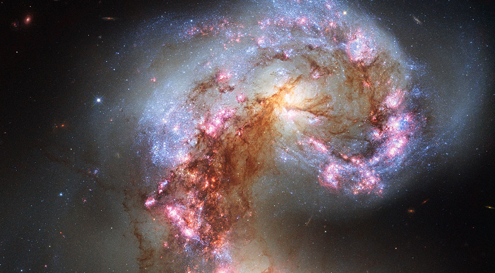

Meu primeiro post
Por: Eloah Justino
Boas-vindas ao meu novo blog! Aqui vou compartilhar dicas e curiosidades.
Dicas e curiosidades sobre a astronomia Dicas * Observe o céu em locais com pouca iluminação para enxergar mais estrelas. * Use aplicativos de observação do céu para identificar planetas, estrelas e constelações. * Acompanhe as fases da Lua durante o mês e perceba como elas mudam gradualmente. * Não olhe diretamente para o Sol sem proteção adequada, pois isso pode causar danos à visão. * Fique atento às notícias sobre eclipses e chuvas de meteoros para aproveitar esses fenômenos. Curiosidades * A luz do Sol leva cerca de 8 minutos e 20 segundos para chegar à Terra. * A Lua é o único satélite natural da Terra e influencia as marés dos oceanos. * O planeta Vênus é conhecido como "estrela-d'alva", embora seja um planeta, não uma estrela. * O maior planeta do Sistema Solar é Júpiter, que possui dezenas de luas. * Algumas estrelas que vemos no céu estão tão distantes que sua luz levou centenas ou até milhares de anos para chegar até nós. * Os astronautas no espaço experimentam a sensação de falta de peso porque estão em queda livre ao redor da Terra. * Todos os elementos mais pesados que o hidrogênio e o hélio foram formados no interior das estrelas, mostrando que, de certa forma, somos feitos de "poeira das estrelas".